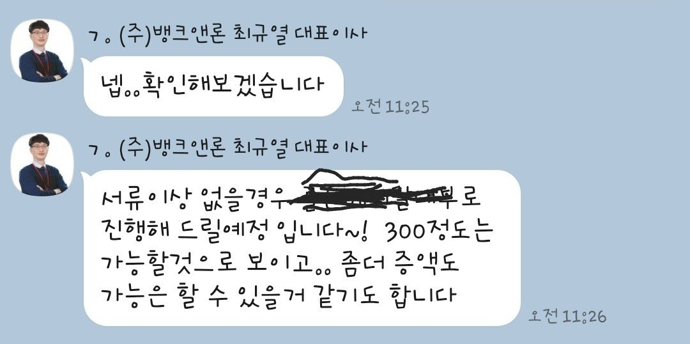
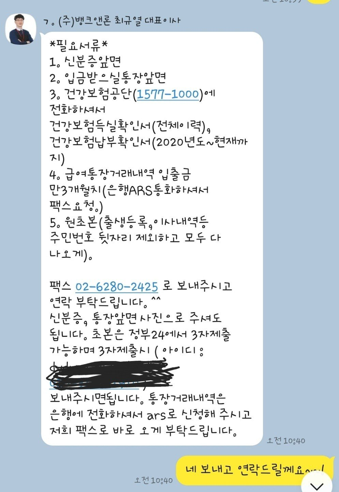

[ 개인회생자대출 ] 최규열이사님 감사합니다
현재 근무기간5년 연봉 2600정도 됩니다
개인회생 26회차 0.8회 미납도 있었구요
기존대출도 1700정도있었어요
개회미납금+ 추가필요자금 해서 300정도필요한상황이였구요
기존대출이많아 안될까봐 조마조마하고 걱정했는데 다행히 생각보다 안내받은서류가 간단했구요^^
오전에신청하고 오후에 바로 입금되었어요
미납금 납부하는 조건이였구요
개인회생 신청전부터 뱅크에서 도움많이받았습니다^^
감사드립니다^^

